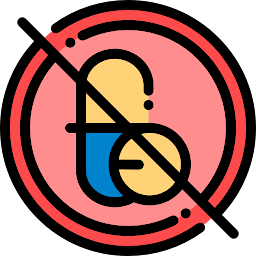
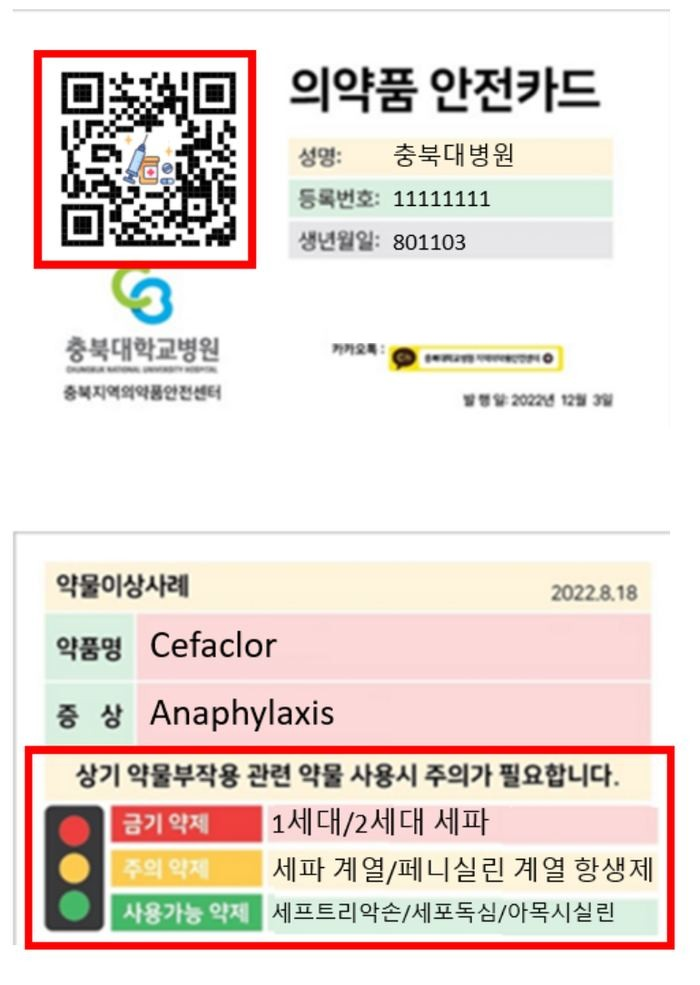
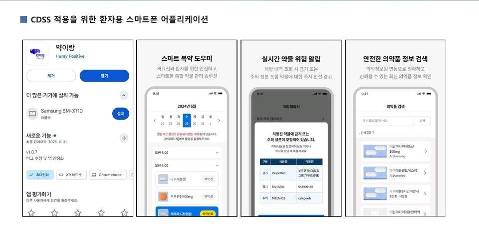

프로젝트 - R&D
2017년 ‘내 손안의 맞춤형 DUR’에서 시작해 앱, 디지털 카드, 병원 CDSS, 마이데이터, LLM으로 이어진 결과물입니다. 대표 프로젝트는 ‘자세히’로 소개 영상과 첨부 서식, 실제 화면 시연을 열어 보고, 보도 표식으로 관련 기사를 봅니다. 확인하고, 보여 주고, 안심하고 복용하는 세 단계가 순서대로 이어집니다.
대표 프로젝트

약물알레르기 알리미
환자 맞춤형 약물알레르기 예방 앱. 모바일 의약품안전카드, 말로 풀어 쓴 action plan, 약 검색, 처방전 QR 스캔. Google Play 평점 5.0(87건), 다운로드 500회 이상. 2018 스마트앱어워드 건강·의료 분야 최우수상.

디지털 약물안전카드와 알레르기 여권 GPT
QR 한 장으로 어느 병원과 약국에서든 열어 보는 약물부작용 요약지. 카드 발급 6개 의료기관, 정보공유 플랫폼(myadr.care)은 9개 대학병원 709명 등록(2024.12 기준). 같은 정보를 GPT에 실어 ‘내 알레르기 여권’처럼 묻고 답합니다. 2024 대한환자안전학회장상.
약물알레르기 진료정보교류
서울대학교병원 강혜련 교수 연구팀과 함께, 한 병원에서 확인한 약물알레르기 정보가 진료정보교류시스템을 타고 다른 병원으로 건너가게 만든 시범구축 사업입니다. 약물알레르기 정보공유 표준(표준서식·표준도메인)을 제정하고 HL7 FHIR AllergyIntolerance 프로파일을 고도화하는 일을 맡았습니다. 2023 진료정보교류 우수사례 공모전 우수상.

마이데이터 의약품 안심복용 CDSS와 약이랑
환자가 ‘나의건강기록’ 앱에서 내려받은 자기 진단·투약·검사·검진 기록을 myadr.care의 SMART DUR CDSS에 올리면, 약물 상호작용과 노인 주의 약제, 항콜린성 부담, STOPP 기준으로 다약제 위험을 걸러내고 환자 맞춤 복용 가이드를 씁니다. 부작용 이력이 있으면 알레르기 보고서까지. 의료진이 검토한 뒤 환자 앱 약이랑으로 보냅니다. 3개 의료기관에서 실증했습니다.
Drug&Safety
“환자의 약물사용 경험에 기반한 정밀의학 플랫폼.” 약물알레르기 알리미를 확장한 My ADR 플랫폼을 설계했고, 충북대 실험실 창업 프로젝트, KAIST Open Venture Lab, 예비창업패키지를 거쳤습니다.
연구 과제 전체 정부와 기관의 지원을 받은 과제
| 기간 | 과제 | 역할 |
|---|---|---|
| 2023.2 - 2025.12 | 마이데이터 기반 의약품 안심복용 CDSS 개발 및 실증환자가 자신의 약물이상반응 정보를 마이데이터로 들고 다니며 안전하게 약을 복용하도록 돕는 임상의사결정지원시스템(CDSS)을 개발하고 실증한 3년 과제. 마이헬스웨이 연계와 LLM 기반 환자 맞춤 복약지도문 생성까지 범위를 넓혔다. | 책임연구자 |
| 2022.4 - 2024.12 | 환자 중심 능동적 의약품이상반응 예방·방지 시스템 구축종이 의약품안전카드의 한계를 넘어, 환자가 자신의 약물부작용 이력을 디지털로 보유하고 어느 병원·약국에서든 제시할 수 있게 하는 능동적 예방 체계를 구축한 과제. 지역의약품안전센터 4곳과 병원약사회 5곳 등 9개 병원으로 확대 적용했고, 정보 공유 표준 항목과 법령 개정안까지 함께 정리했다. | 책임연구자 |
| 2022.7 - 2023.2 | 개인 맞춤형 약물반응 정보 기반 마이데이터 안심복용 시스템 개발개인별 약물반응 정보를 마이데이터로 관리해 안심복용을 지원하는 시스템을 창업성장 R&D 과제로 개발. | 책임연구자 |
| 2021.5 - 2021.12 | 환자의 마이 부작용 데이터 기반 AI 복약 및 VR 복약지도 플랫폼 개발환자 본인의 부작용 데이터를 활용한 AI 복약 안내와 VR 복약지도 플랫폼의 기술·특허 전략을 수립한 IP-R&D 과제. | 책임연구자 |
| 2020.9 - 2021.5 | 일차의료 기반 만성 호흡기 알레르기질환 관리 스마트 헬스케어 서비스 모델 개발·실증 기획연구동네의원 중심으로 천식·알레르기비염 같은 만성 호흡기 알레르기질환을 관리하는 스마트 헬스케어 서비스 모델을 설계하고 실증 계획을 세운 기획연구. | 책임연구자 |
| 2020.6 - 2022.2 | 마이데이터 기반 환자 중심 약물이상반응 예방 시스템 개발환자가 보유한 개인 건강데이터를 알고리즘으로 분석해 위험한 약물반응을 예측하고 사전에 차단하는 예방 시스템을 연구한 기본연구 과제. | 책임연구자 |
| 2020.5 - 2020.10 | 병원 전자의무기록 공통데이터모델 구축병원 전자의무기록을 약물감시 연구에 쓸 수 있도록 공통데이터모델(CDM)로 변환·구축한 과제. | 책임연구자 |
| 2019.5 - 2019.11 | 공통데이터모델 기반 오셀타미비르 이상반응 평가공통데이터모델로 표준화한 병원 전자의무기록을 이용해 오셀타미비르 투여 후 발생한 이상반응을 평가한 과제. | 책임연구자 |
| 2017.4 - 2018.12 | 내 손안의 개인 맞춤형 DUR: 스마트폰 기반 환자 중심 약물알레르기 예방 시스템환자 개인의 약물알레르기 정보를 스마트폰에서 즉시 조회해 위험 약제를 피하게 하는 환자 중심 DUR 시스템을 개발한 과제. 이후 '약물알레르기 알리미' 앱과 성분명 기반 위험도 평가 특허로 이어졌다. | 책임연구자 |
| 2016.5 - 2016.12 | 메타볼로믹스를 이용한 중증천식의 스테로이드 저항성 기전 연구중증천식 환자가 스테로이드에 반응하지 않는 기전을 대사체 분석으로 탐색한 신진연구자 과제. | 책임연구자 |
공동연구책임자와 공동연구자로 참여한 과제 18건
| 2025 - 진행 중 | 소아 희귀·난치성 중증질환 다기관 공동연구 인프라 구축소아 희귀·난치성 중증질환 연구를 위한 다기관 공동연구 기반을 구축하는 탑다운 과제에 공동연구책임자로 참여. | 공동연구책임자 |
| 2025 - 진행 중 | 전자의무기록시스템 인증 교육과정 개발 사업전자의무기록시스템 인증제도의 교육과정을 개발하는 사업에 공동연구자로 참여. | 공동연구자 |
| 2025 - 진행 중 | 중증천식 생물학적제제 비교 후향적 연구중증천식에 사용되는 생물학적제제들의 실사용 성과를 후향적으로 비교하는 다기관 연구에 공동연구자로 참여. | 공동연구자 |
| 2023 - 2024 | 약물알레르기 정보 공유 사업의료기관 사이에 약물알레르기 정보를 표준 형식으로 주고받을 수 있게 하는 사업에 공동연구책임자로 참여. | 공동연구책임자 |
| 2021.4 - 2025.12 | 의료데이터 중심병원 연구사업서울대학교병원 컨소시엄의 의료데이터 중심병원 사업에서 충북대학교병원 참여기관 책임자를 맡아 병원 데이터의 표준화와 연구 활용을 담당. | 공동연구책임자 |
| 2021.4 - 2023.12 | 웰케어산업 특화 인공지능 기술지원 플랫폼 구축웰케어 산업 분야 기업이 활용할 인공지능 기술지원 플랫폼을 구축하는 컨소시엄 과제에 공동연구책임자로 참여. | 공동연구책임자 |
| 2020.8 - 2020.11 | 의료데이터 중심병원 연구사업 (선행과제)의료데이터 중심병원 본사업에 앞서 수행한 4개월 선행과제에서 충북대학교병원 책임교수를 맡아 데이터 구축 범위와 활용 모델을 정리. | 공동연구책임자 |
| 2020 | 중증 이상반응 원인 의약품 실태조사 및 유전적 위험인자 연구중증 약물이상반응을 일으키는 의약품의 실태를 조사하고 관련 유전적 위험인자를 분석한 용역연구에 공동연구자로 참여. | 공동연구자 |
| 2017 | 의료기관 전자의무기록 연계 국가모델 구축의료기관 사이에 전자의무기록을 연계하는 국가 모델을 설계한 사업에 공동연구자로 참여하고 충북대학교병원 기관 책임을 맡았다. | 공동연구자 |
| 2017 | 병원 EMR 공통데이터모델 기반 KAERS 연계방안 및 분석 알고리즘 개발병원 EMR 공통데이터모델을 의약품이상사례보고시스템(KAERS)과 연계하는 방안과 분석 알고리즘을 개발한 용역연구. | 공동연구자 |
| 2016 - 2018 | 지속가능 도시대사를 활용한 도시안전성 평가모델 개발 및 적용도시대사 개념을 이용해 도시 안전성을 평가하는 모델을 개발하고 적용한 다학제 과제에 공동연구자로 참여. | 공동연구자 |
| 2016 - 2017 | 응급의료센터 기반 약물부작용 규모 연구 (2016-2017)응급의료센터를 방문한 환자에서 약물이상반응이 차지하는 규모를 다기관으로 조사한 연구. 이후 PLOS ONE 2022 다기관 관찰연구(1저자) 등으로 이어졌다. | 공동연구자 |
| 2016 - 2017 | 만성신질환 환자에서 알로푸리놀 중증피부이상반응 예방을 위한 투여 전 HLA-B*58:01 검사의 유용성에 대한 전향적 연구만성신질환 환자에게 알로푸리놀을 쓰기 전 HLA-B*58:01 유전자 검사를 시행해 중증피부이상반응을 예방할 수 있는지 전향적으로 확인한 연구. | 공동연구자 |
| 2016 | 중증천식 환자 임상정보 및 인체자원 수집체계 구축과 통합분석중증천식 환자의 임상정보와 인체자원을 표준 절차로 수집하는 체계를 만들고 통합 분석한 다기관 과제. | 공동연구자 |
| 2016 | 병원 약물이상반응 사례 표준 EMR 모델 개발병원마다 제각각인 약물이상반응 기록을 표준화하기 위한 EMR 서식 모델을 개발한 사업. | 공동연구자 |
| 2015 | 응급의료센터 기반 약물부작용 규모 연구 (2015)응급의료센터 내원 환자에서 약물이상반응의 발생 규모를 파악한 연구의 첫 해 과제. | 공동연구자 |
| 2015 | 병원 EMR 자료 기반 약물부작용 규모 연구병원 전자의무기록 자료를 이용해 약물이상반응의 발생 규모를 추정한 연구. | 공동연구자 |
| 2014.1 - 2015.3 | 학교급식 식품알레르기 스마트폰 기반 조기경보 시스템 구축학교급식에서 식품알레르기 사고를 막기 위해 학생·보호자·영양교사를 잇는 스마트폰 조기경보 시스템을 설계하고 구축한 과제. 연구 설계와 기획, 보고서 작성, 실행을 담당했다. | 공동연구책임자 |